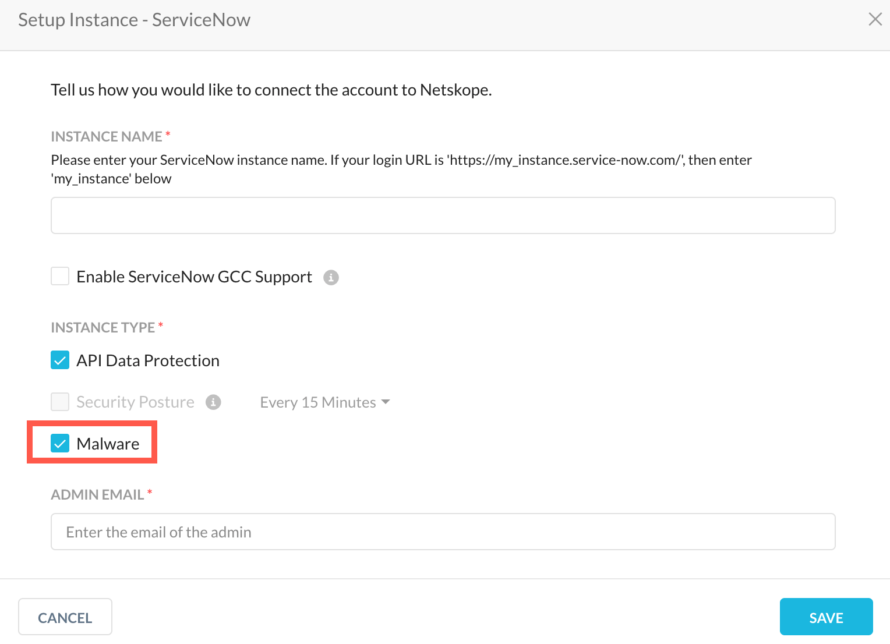
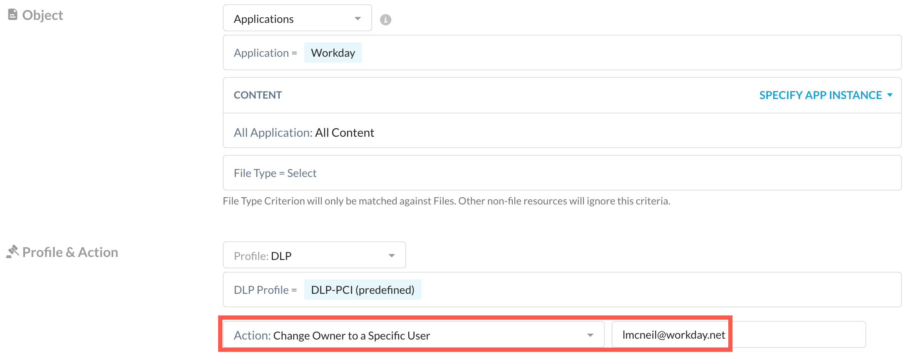
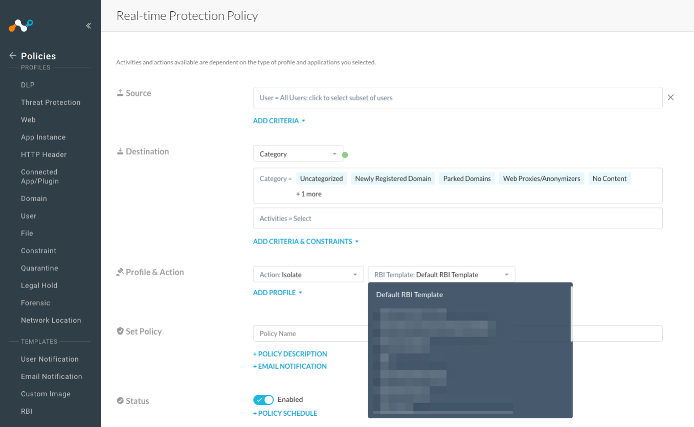
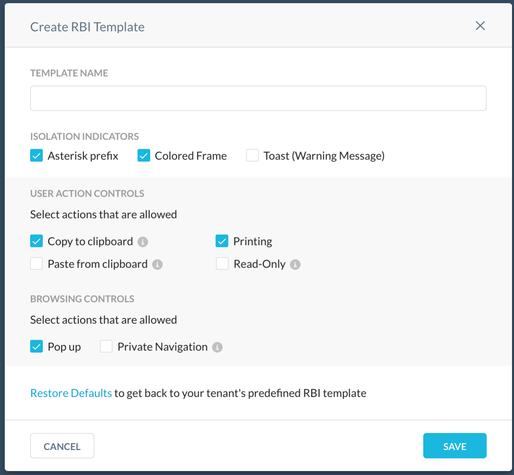
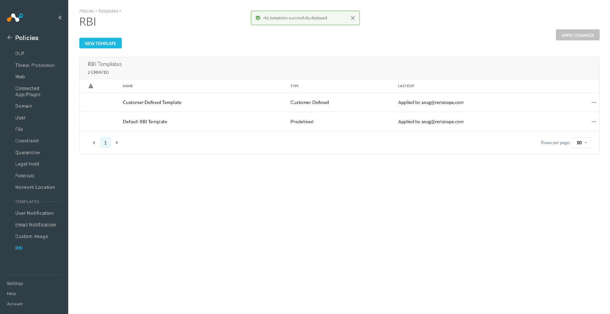
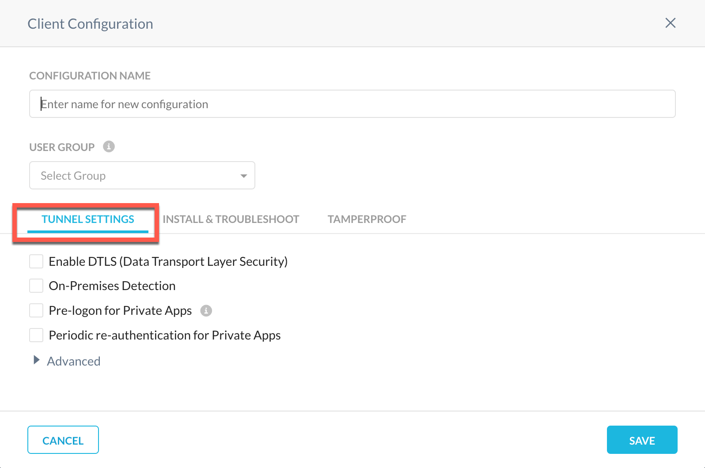

New Features And Enhancements In Release 101.0.0
Here is the list of the new features and enhancements.
Enhanced SharePoint Site Search
Enhanced the Search sites functionality to support while searching for sites with exact match of Site UID. This is in addition to the currently supported site search with prefix.
Malware Detection for ServiceNow
Netskope API Data Protection now supports malware detection for files and attachments in ServiceNow. You can navigate to Settings > API-enabled Protection > SaaS > Classic to enable this feature. Click the ServiceNow app and under the instance setup window, enable the Malware checkbox.
|  |
Audit Support For Outlook Using O365 Management Activity API
Netskope API Data Protection now supports audit events for Microsoft Office 365 Outlook. To enable this feature on your existing Netskope account, re-grant the Microsoft Office 365 Outlook app under Settings > API-enabled Protection > SaaS > Classic > Microsoft Office 365 Outlook.com. Once you re-grant, the following new Office 365 Management API permissions are available :
API | Permission Type | Permission Name | Description | Netskope Use Case |
|---|---|---|---|---|
Office 365 Management API | Delegated | ActivityFeed.Read | Read activity data for your organization. | Audit logs. |
Application | ActivityFeed.Read | Read activity data for your organization. | ||
Application | ActivityFeed.ReadDlp | Read DLP policy events including detected sensitive data. | ||
Application | ServiceHealth.Read | Read service health information for your organization. |
After re-grant, you can view the Microsoft Office 365 Outlook audit events under Skope IT > Events > Application Events. To learn more: Microsoft Office 365 Outlook Audit Events.
Change in Microsoft Office 365 OneDrive for Business and SharePoint Sites Apps Permission
Recently, Netskope API Data Protection switched from using the Azure Active Directory Graph API permissions to Microsoft Graph API permissions as recommended by Microsoft. Netskope API Data Protection will no more use the following Azure Active Directory Graph API permissions:
API | Permission Name | Description |
|---|---|---|
Azure Active Directory Graph API | Directory.Read.All | Read directory data. |
User.Read | Sign in and read user profile. |
You can view the updated list of permissions for Microsoft Office 365 OneDrive for Business & SharePoint Sites here:
To reflect this change, log in to your Netskope tenant, and re-grant the Microsoft Office 365 OneDrive for Business & SharePoint Sites apps.
Support ServiceNow Tokyo Version
Netskope API Data Protection validated support up till ServiceNow Tokyo release.
Synthetic Resource And Triggers
Netskope adds synthetic resource and synthetic triggers to all the resources where from_user was missing. Prior to this enhancement, there was dependency on DB lookup to extract from_user. With this update, there is no from_user in database, and same results are fetched using synthetic query.
Name Change For Rename Activity
The activity name for renaming and moving a file or folder in the Dropbox application is changed from Rename to Edit.
Amazon S3 Connector Side Changes
In Amazon S3, file uploads happen in portions when file sizes are larger than 8.3 MB and 17 MB for the CLI platform and the browser platform, respectively.
Previously, large files did not support file size policies due to limitations on handling larger file upload. Netskope addressed this issue with additional support for file size-based policies through the multipart feature.
App Connector Changes For Access Key ID
Netskope adds an access key variable to all the activities of the AWS services. Access keys are long-term credentials for an IAM user or the AWS account root user. Access Key ID uniquely identifies an AWS User that will be displayed in the AWS events.
Yahoo Mail UploadAndSend Activity
Previously, in Yahoo Mail, Send and Upload activities occurred in the same packet. Netskope introduces UploadAndSend activity to eliminate this occurrence.
Instance ID Changes
Netskope updates the following for Zoom real-time protection:
instance_id logic extraction for non-signed in users
When an unautheticated user performs any activity, then the instance_id value is "unauthenticated".
For an unauthenticated user, currently supporting activities are File Upload and Download from chat or meeting option.
Olark Application Update
Netskope extends support for the following activities:
Post Message
Edit User
Delete Group
Create Group
New iOS Versions in Device Classification For iOS
Netskope updates the Minimum OS Versions dropdown list in Device Classification with new iOS versions: 14, 15, and 16.
CCI App Page Update
Netskope adds certain usability enhancements to the CCI user interface (UI) for easy consumption of information from CCI. Some of the key enhancements are as follows:
Granular App details: Activity, DLP, and Threat Protection coverage.
Context on discovered Instances for an app.
Improved free flowing intuitive navigation across all attributes.
Improved navigations and workflow for app comparisons and score customisation.
Capability to submit requests for new app, app info updates, and reporting an app breach.
Note
App HQ Location and Pricing is deprecated and removed from the App Information page.
This is a Controlled General Availability (formerly known as Limited Availability) feature. Contact your Netskope sales representative or support to enable this on your tenant.
File Extension Update
Email from the SMTP proxy is saved to forensics as part of the original file download feature with .eml extension.
Source Code Entity Detection Enhancement
Enhanced Source Code (Any) Entity to detect incomplete portions of long code blocks.
Removed Terms From Profanity Entity
Removed derrière and tushy from the Inappropriate Language (English; Biological) entity due to unreported but potential false positives.
Updated Name Entity
Reduced multiple false positives in the Full Names Entities for Spain (ES), UK, and International as well as the Last Names entities for U.S and International.
Updated Password Entity
Netskope updates the Passwords (Common) Entity with better password detection such as 'n3t5k0pe1'. In addition to the efficacy benefits, the improvements allow for optionally less reliance in DLP Rules on Passwords (Secure) that are naturally more prone to false positives.
This also updates the Private Keys (Generic, Begin) Entity, adding support for BEGIN OPENSSH PRIVATE KEY.
Spanish Bank Account Number Entity
Netskope adds support for Spanish domestic bank account numbers, known locally as "código cuenta cliente" or simply "CCC". Also adds the "ccc" terms-based Entity.
Bank Account Number Entities
Netskope enhances support for bank account number related terms for the following countries:
Austria
Belgium
Bulgaria
China
Czechia
Denmark
Greece
Hungary
Ireland
Isle of Man
Latvia
Lithuania
Malaysia
Poland
Portugal
Puerto Rico
Romania
Russia
Sweden
Switzerland
Added the entities supporting bank account numbers for the following countries:
Belgium
Czechia
Denmark
Finland
Greece
Hungary
Ireland
Isle of Man
Malaysia
Poland
Portugal
Puerto Rico
Russia
Sweden
Netskope adds a contextual Entity for Austria that detects konto and BLZ terms and numbers in tight proximity.
The UI navigation for Bank Account Number Entities within "Bank Account Numbers (by Country)" has been changed in order to group Entities together for the same country.
The UI navigation has changed slightly for a few other categories, mainly "Personal Names", "Postal Addresses", and "Regional Identifiers". For example, the "Personal Names (FR)" menu item has been renamed to "Personal Names (France)". The alphabetical order is also altered within the menu, allowing "France" to come before "Germany" and "Spain", as opposed to the previous order of "DE", "ES", and "FR".
AND Logic Support For Fingerprint And DLP Profiles
Enable logical "AND" of a set of content inspection rules with a set of fingerprint rules for DLP profiles.
Note
This is a Controlled General Availability (formerly known as Limited Availability) feature. Contact your Netskope sales representative or support to enable this on your tenant.
AND Logic Support For Two DLP Rules
Enable logical "AND" of a set of content inspection rules with another set of content inspection rules for DLP profiles.
Note
This is a Controlled General Availability (formerly known as Limited Availability) feature. Contact your Netskope sales representative or support to enable this on your tenant.
To learn more: Create a Custom DLP Profile.
Device Constraint Fields
The fields in USB Device Constraints are now AND'ed together. It is now evaluated as "Manufacturer AND Device ID AND Model AND Serial Number".
To learn more: Constraint Profile.
Mute Similar User Alerts
Netskope updates user-alert popup dialog with checkbox labeled as Apply to the remaining files. On selecting this checkbox, any action by the same user, using the same application that results in a user-alert for the same policy is suppressed for the next 10 minutes.
Alerts, Events, and Incidents are created for the suppressed alerts, and the justification and action are copied from the original user alert.
Updated Default Pause Time
In the Device Health page, the Endpoint DLP service may be paused for an endpoint. The intention is to allow users to have temporary exceptions to policy enforcement. The time for enforcement it is paused has been changed from 5 to 30 minutes.
To learn more: Devices.
System Reboot Status
If device control cannot initialize correctly without a reboot, the status is reported to the admin informing that a WebUI management console reboot is required.
Netskope DLP Service
When installing the Netskope Client, the Endpoint DLP Service is registered with Windows as Netskope DLP Service. The Netskope DLP Service is registered as Disabled in the service control manager, configure and start it to make use of this feature.
Device Control Policy Enhancement
Phones (iOS and Android) do not support "Read-Only" actions when connected as USB storage devices. If an Endpoint Device Control policy with a "Read-Only" action matches on a phone device, the device is blocked. A warning has been added to the Policy Editor page to remind policy authors of this restriction.
To learn more: Endpoint Data Loss Prevention.
Transaction Field Event Name Change
Netskope renamed the following fields from:
x-headers-name to x-sr-headers-name
x-headers-value to x-sr-headers-value
Transaction Event Format 2
Netskope added more than 30 SSL related fields to Transaction Events format to increase the visibility of SSL policy and SSL engine actions. The following are the updated topics:
SSL policy: The decision of the policy engine or SSL error settings.
SSL Certificate : Details of the certificate and whether it is valid.
Note
x-r-cert-revocation-check is reserved and is always empty.
SSL Engine: Details on the analysis performed by the SSL Engine:
Errors found in SSL negotiation.
The action done and reason in SSL communication.
The TLS and cipher versions.
JA3 and JA3S fingerprints.
- x-cs-tunnel-src-ip: Public IP of the user
To learn more: Transaction Event Fields.
Note
This feature is in Beta currently. Contact your Sales Representative or Support to enable this feature.
Transaction Event Format 3
Netskope added transaction event format 3 with approximately 60 fields.
Connection: IPs and ports of the user and remote server.
HTTP:
XFF headers in Connect and other methods
Host, Port, and User-Agent in Connect method
Http full URL and HTTP version
Application and File topics: The information in Application Event is visible in Transaction Event.
General: Add general error notification `x-error` and local time `x-c-local-time`.
5 Real Time Policy: The information about Realtime Policy evaluation.
To learn more: Transaction Event Fields
Note
Some fields are not populated currently.
This feature is in Beta currently. Contact your Sales Representative or Support to enable this feature.
On-Premises Central Authority Support for TLS Decryption
You can now connect to the on-prem hosted HSM/key manager to get the proxy emulated certificate signed for TLS decryption without uploading or providing an intermediate certificate/key to Netskope.
To learn more: Certificates
Note
This is a Controlled General Availability (formerly known as Limited Availability) feature. Contact your Netskope sales representative or support to enable this on your tenant.
Generic Header Insertion
Netskope enhances the generic header insertion feature to support Inserting multiple custom headers for a given application. If an application supports more than one header, an admin can select all of them in a single flow instead of creating multiple header profile for the same application.
To learn more: Header Insertion
Note
This is a Controlled General Availability (formerly known as Limited Availability) feature. Contact your Netskope sales representative or support to enable this on your tenant.
Block Single Destination IP
Block single destination IP is now available and will be enforced on all tenants in version 103.0.0.
Netskope supports applying SSL Do Not Decrypt policies and Real-time Protection policies based on destination IP addresses. Destination IP addresses can be configured in custom URL lists.
To learn more: URL Lists
Updated Application Event And Malsite Alert
Netskope adds JA3 and JA3S to Application Events and Malsite alert.
JA3 with JA3S is a method to fingerprint the TLS negotiation between a client and server. This combined fingerprinting can assist in producing higher fidelity identification of the encrypted communication between a specific client and its server. These fields are available for TLS decrypted traffic.
File Type Detection
Netskope improved the logic in order to detect file type efficiently.
Localization Zones
Internet content providers (such as websites) and SaaS providers often use users geographic information to make content localization decisions.
Netskope's 'Localization Zones' feature addresses this well known problem of content localization. It helps users located in countries or regions where Netskope doesn't have an in-country data center to get content that is local to them in terms of language and relevance.
Note
Contact your local sales team or Netskope support to enable this feature in your account.
User/User-Group/Organization Unit(OU)/ Exclusion In Real-Time Protection Policies
You now can exclude users, user groups, and organizational units when configuring the Source field in Real-time Protection policies.
To learn more: Real-time Protection Policies
Host Limit Update
With this release, the admin can specify up to 500 hosts in the Private Application definition.
Client-less Access Failure Error Notification
Netskope enhances error notification to Client-less access failure cases by providing more context regarding the cause of failure.
SRP Information
Netskope updates the following SRP information in Troubleshooting page:
SRP Size
Number of host definitions in the SRP
Number of publishers in the SRP
Private app tags referenced in the SRP
CGNAT Address Space
Netskope introduces a feature flag to control NPA client for resolving private app hosts as CGNAT addresses 100.64.0.0/16 instead of 191.1.0.0/16.
Support New Policy Action on Workday
Next Generation API Data Protection has introduced a new policy action for the Workday app - Change Owner to a Specific User. When you select this action and a policy violation occurs, Netskope changes the ownership of the file/folder to a specific user as entered in the policy wizard.
|  |
To learn more: Create a Next Generation API Data Protection Policy.
Support DLP Scan on Zoom Channel Message
Next Generation API Data Protection can now support DLP scan on channel messages in a Zoom meeting. To learn more: Activities Monitored by Netskope.
Enabled RBI configurable settings
RBI configurable settings (RBI templates) were introduced in the release 97.1.0, and required a Netskope representative to enable the feature in your tenant. From this release, RBI configurable settings (RBI templates) is enabled by default for all RBI accounts.
|  |
|  |
With Remote Browser Isolation (RBI) configurable settings (RBI templates), admins can configure isolation settings to define and apply granular controls that govern the user interaction in isolated web sites for different risk scenarios (that is, users or categories). These controls are configured defining RBI templates that can be attached to any new or existing RBI policy, which customizes end users experience in isolation.
|  |
To learn about the RBI configurable settings, view RBI templates.
Action Isolate Filter
Netskope enhances SkopeIT filters to include Isolate as a valid action in all events that include Action field. This feature helps to easily filter RBI related events for Page Events, Application Events and Alerts in SkopeIT.
 |
Detection for Phishing URLs & Domains
Gen.DetectBy.NetskopeAI.Phishing is a new alert name introduced to the inline Threat Protection scanning enabled for accounts with real-time Threat Protection policies. This detects a phishing site using Netskope's machine learning capabilities. Like malsite detections, you can open a support case and override with custom category if detection efficacy issues are encountered.
Hiding Native App Alerts
The Malware incidents page no longer displays alerts and blocking actions discovered by Netskope from third-party applications. However, these Native App alerts are still available in SkopeIT, and you can see them in Malware Incidents by searching the following malware names:
Gen.Malware.Detect.By.App
Gen.Malware.Detect.By.App-abuse
To learn more: About Malware
Client Upgrade Occurrence
This enhancement reduces the occurrence of Windows Client upgrade during system shutdown
WBEM Query Permission
Netskope enhances internal error handling by using CoSetProxyBlanket to set correct permission for each WBEM query.
Block Template
Netskope enhanced MAC block notification dialog display layout.
Linux Client Support
Netskope Client supports the following:
Linux Mint versions: 19, 20, and 21
Ubuntu 22.04 LTS
To learn more: Netskope Client Supported OS and Platform.
Client Support For New Versions Of Windows 10 and 11
Netskope Client now validates and supports SWG/CASB feature validations for:
Windows 10, version 22H2
Windows 11, version 22H2
enableAirDropException flag
Added a new feature flag 'enableAirDropException' for AirDrop in macOS.
Bypass IPv6 Traffic
With this enhancement, Netskope Client bypasses the IPv6 DNS traffic.
Note
This enhancement is applicable only for DNS security feature.
To learn more: Netskope Client Support in Cloud Firewall
Netskope Client Library Updates
Netskope upgrades the old third-party libraries to OpenSSL 1.1.1q and cURL 7.86.0.
certutil.exe Binary Update
Firefox does not use system certificate store. It maintains separate cert database file in each Firefox profile.
Agent uses Mozilla's NSS tool certutil for installing CA cert in Firefox certificate DB. Certutil binaries are signed and hosted on Provisioner and downloaded by Agent if required. Certutil binaries signature have expired for Windows and are re-signed using SignTool.exe with netskope cert.
Steering Configuration Preferences
Netskope enhanced the following for the Steering Configuration Preferences:
Removed the Skip this updateoption from the new predefined certificate-pinned application notification.
Renamed the Skip option to Default only (bypass) in Review Updates For Certificate-Pinned Apps window.
Removed the New word in the Review Updates For Certificate-Pinned Apps window.
To learn more: Configuring the Steering Preferences
User And Date Modification
Netskope enhances WebUI to validate the User and Date modification for Client configuration. When dragged from top to middle it updates all the configuration that appears above the dragged one.
Traffic Steering Tab Rename
Renamed Traffic Steering to Tunnel Settings in Client Configuration to remove duplicity.
|  |
To learn more: Netskope Client Configuration
Steering Configuration Enhancements
The Steering Configuration page is more easy to navigate through with the new action options. For each default and custom steering configuration, you can click View Steered Items to see the Steered Traffictab or click View Exceptions to see the Exceptions tab.
To learn more: Steering Configuration
Client Traffic Exploit Prevention Renamed to Intrusion Prevention System
Netskope renamed Client Traffic Exploit Prevention (CTEP) to Intrusion Prevention System (IPS) throughout the Netskope user interface (UI). The UI continues presenting alerts as CTEP alerts in SkopeIT until a later release.
To learn more: Intrusion Prevention System
IPS Action Name Changes
Netskope changed the IPS event actions to match the terminology of other Netskope alert types. For example, Allowed and Blocked were changed to Allow and Block respectively.
To learn more: About Alerts
In addition to documenting all new and improved features, here is the list of articles with key documentation updates:
A new section for macOS in MobileIron Cloud - This topic is enhanced with the details regarding configuring macOS devices using MobileIron Cloud.
A new section for non-domain joined macOS devices in VMware Workspace ONE - Earlier, this topic included details regarding domain-joined macOS devices. In this release, this topic is now enhanced with details to deploy Client on non-domain joined macOS devices using VMware Workspace ONE. To learn more, view Deploy Client on macOS Using VMware Workspace ONE.
Adding Steered Items: New article on how to add steered items to your steering configurations.
Adding Steering Exceptions for macOS Upgrade: Improved the content and structure for adding macOS steering exceptions.
Managing Error Settings: Improved the content and structure for the steering error settings.
Enabling Dynamic Steering: Improved the content and structure for enabling dynamic steering.
Downloading Steering Configurations: Improved the content and structure for downloading your steering configurations.